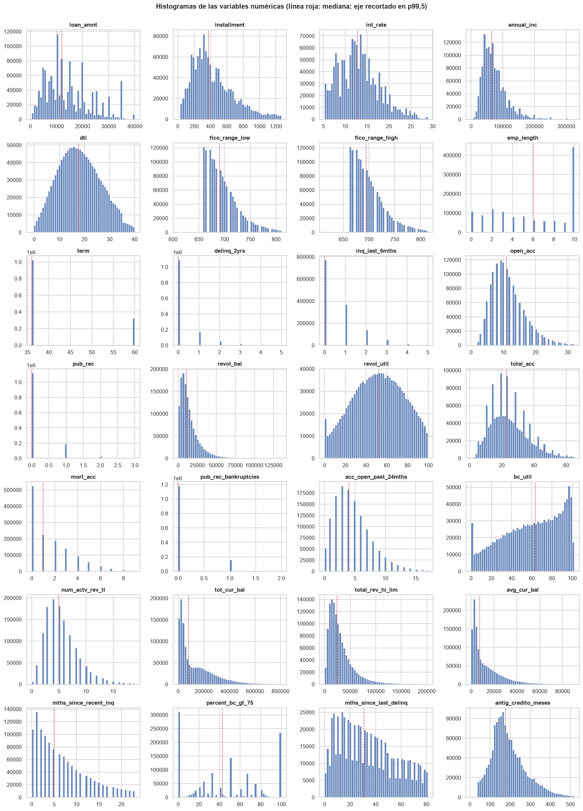
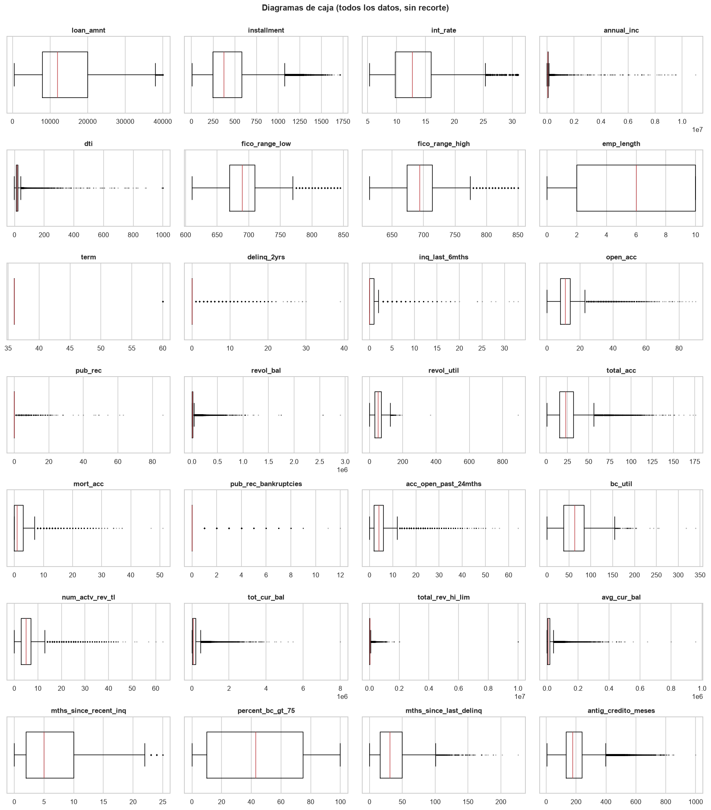
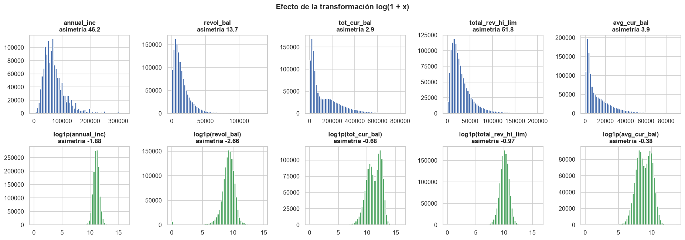
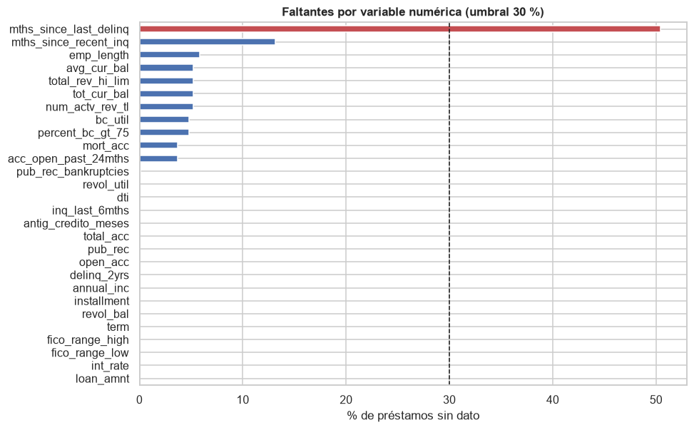
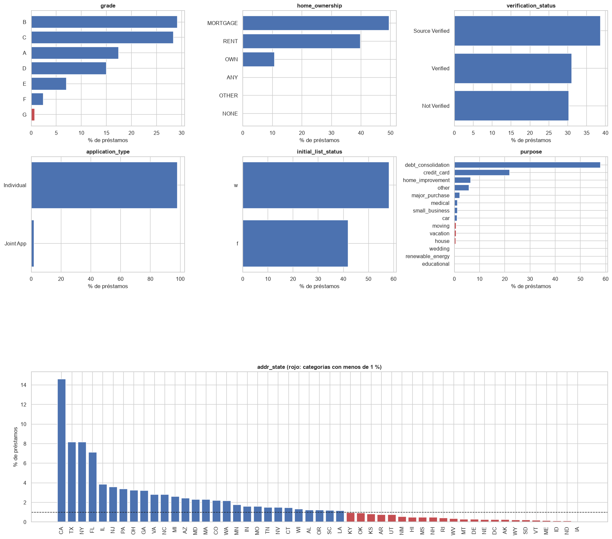
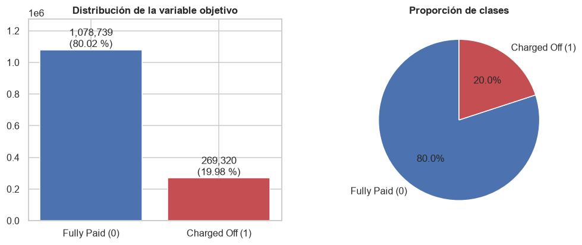

2. Análisis unidimensional#
Sección 9.10.4.1.2 del enunciado. Se analiza cada variable candidata por separado: las numéricas con estadísticos de posición y dispersión, valores atípicos, forma de la distribución y faltantes; las categóricas con sus frecuencias, categorías raras y posibles redundancias; y, al final, la variable objetivo. Todos los estadísticos se calculan sobre los 1.348.059 préstamos cerrados, sin muestreo. La única excepción es la prueba de Shapiro-Wilk, que solo es válida hasta n = 5.000 y se aplica a una muestra aleatoria de ese tamaño.
import sys
import warnings
sys.path.insert(0, "../src")
warnings.filterwarnings("ignore")
import matplotlib.pyplot as plt
import numpy as np
import pandas as pd
import seaborn as sns
from scipy import stats
import utils as u
u.estilo()
pd.set_option("display.max_columns", 30, "display.width", 180, "display.max_rows", 120)
df = u.cargar_prestamos(u.NUM_EDA + u.CAT_EDA + ["default", "issue_year"])
print(f"{len(df):,} préstamos x {df.shape[1]} columnas")
1,348,059 préstamos x 37 columnas
2.1 Variables numéricas#
Se analizan 28 variables numéricas conocidas al originar el préstamo: monto, cuota, tasa de
interés, ingreso anual, razón deuda/ingreso (dti), puntaje FICO, antigüedad laboral y
crediticia, y el historial de cuentas, saldos, utilización y consultas del buró de crédito.
2.1.1 Estadísticos descriptivos, IQR y valores atípicos#
Se consideran atípicos los valores fuera de \([Q_1 - 1{,}5\,IQR,\; Q_3 + 1{,}5\,IQR]\).
def resumen_numerico(s: pd.Series) -> dict:
x = s.dropna()
q1, q2, q3 = x.quantile([0.25, 0.5, 0.75])
iqr = q3 - q1
li, ls = q1 - 1.5 * iqr, q3 + 1.5 * iqr
fuera = ((x < li) | (x > ls)).sum()
return {"media": x.mean(), "mediana": q2, "desv_est": x.std(), "min": x.min(), "p25": q1,
"p50": q2, "p75": q3, "max": x.max(), "IQR": iqr, "lim_inf": li, "lim_sup": ls,
"n_atipicos": int(fuera), "%_atipicos": 100 * fuera / len(x),
"asimetria": stats.skew(x), "curtosis": stats.kurtosis(x),
"%_faltantes": 100 * s.isna().mean()}
num = pd.DataFrame({c: resumen_numerico(df[c]) for c in u.NUM_EDA}).T
num.round(2)
| media | mediana | desv_est | min | p25 | p50 | p75 | max | IQR | lim_inf | lim_sup | n_atipicos | %_atipicos | asimetria | curtosis | %_faltantes | |
|---|---|---|---|---|---|---|---|---|---|---|---|---|---|---|---|---|
| loan_amnt | 14409.00 | 12000.00 | 8716.09 | 500.00 | 7975.00 | 12000.00 | 20000.00 | 40000.00 | 12025.00 | -10062.50 | 38037.50 | 7154.0 | 0.53 | 0.78 | -0.08 | 0.00 |
| installment | 437.78 | 375.04 | 261.50 | 4.93 | 248.28 | 375.04 | 580.22 | 1719.83 | 331.94 | -249.62 | 1078.12 | 42189.0 | 3.13 | 1.01 | 0.75 | 0.00 |
| int_rate | 13.24 | 12.74 | 4.77 | 5.31 | 9.75 | 12.74 | 15.99 | 30.99 | 6.24 | 0.39 | 25.35 | 24977.0 | 1.85 | 0.71 | 0.51 | 0.00 |
| annual_inc | 76237.80 | 65000.00 | 69922.99 | 0.00 | 45750.06 | 65000.00 | 90000.00 | 10999200.00 | 44249.94 | -20624.85 | 156374.91 | 66029.0 | 4.90 | 46.24 | 4803.39 | 0.00 |
| dti | 18.27 | 17.61 | 11.16 | -1.00 | 11.79 | 17.61 | 24.05 | 999.00 | 12.26 | -6.60 | 42.44 | 5484.0 | 0.41 | 27.09 | 2112.18 | 0.03 |
| fico_range_low | 696.16 | 690.00 | 31.85 | 610.00 | 670.00 | 690.00 | 710.00 | 845.00 | 40.00 | 610.00 | 770.00 | 46516.0 | 3.45 | 1.28 | 1.66 | 0.00 |
| fico_range_high | 700.16 | 694.00 | 31.85 | 614.00 | 674.00 | 694.00 | 714.00 | 850.00 | 40.00 | 614.00 | 774.00 | 46516.0 | 3.45 | 1.28 | 1.66 | 0.00 |
| emp_length | 5.96 | 6.00 | 3.69 | 0.00 | 2.00 | 6.00 | 10.00 | 10.00 | 8.00 | -10.00 | 22.00 | 0.0 | 0.00 | -0.22 | -1.50 | 5.83 |
| term | 41.78 | 36.00 | 10.26 | 36.00 | 36.00 | 36.00 | 36.00 | 60.00 | 0.00 | 36.00 | 36.00 | 324878.0 | 24.10 | 1.21 | -0.53 | 0.00 |
| delinq_2yrs | 0.32 | 0.00 | 0.88 | 0.00 | 0.00 | 0.00 | 0.00 | 39.00 | 0.00 | 0.00 | 0.00 | 259666.0 | 19.26 | 5.60 | 58.71 | 0.00 |
| inq_last_6mths | 0.66 | 0.00 | 0.96 | 0.00 | 0.00 | 0.00 | 1.00 | 33.00 | 1.00 | -1.50 | 2.50 | 73396.0 | 5.44 | 2.02 | 10.07 | 0.00 |
| open_acc | 11.59 | 11.00 | 5.47 | 0.00 | 8.00 | 11.00 | 14.00 | 90.00 | 6.00 | -1.00 | 23.00 | 46165.0 | 3.42 | 1.30 | 3.34 | 0.00 |
| pub_rec | 0.22 | 0.00 | 0.60 | 0.00 | 0.00 | 0.00 | 0.00 | 86.00 | 0.00 | 0.00 | 0.00 | 228140.0 | 16.92 | 11.56 | 743.98 | 0.00 |
| revol_bal | 16270.87 | 11130.00 | 22477.76 | 0.00 | 5936.00 | 11130.00 | 19758.00 | 2904836.00 | 13822.00 | -14797.00 | 40491.00 | 80050.0 | 5.94 | 13.74 | 710.20 | 0.00 |
| revol_util | 51.81 | 52.20 | 24.53 | 0.00 | 33.40 | 52.20 | 70.70 | 892.30 | 37.30 | -22.55 | 126.65 | 72.0 | 0.01 | -0.04 | 0.24 | 0.07 |
| total_acc | 24.98 | 23.00 | 12.00 | 1.00 | 16.00 | 23.00 | 32.00 | 176.00 | 16.00 | -8.00 | 56.00 | 22674.0 | 1.68 | 0.96 | 1.67 | 0.00 |
| mort_acc | 1.67 | 1.00 | 2.00 | 0.00 | 0.00 | 1.00 | 3.00 | 51.00 | 3.00 | -4.50 | 7.50 | 17794.0 | 1.37 | 1.64 | 5.19 | 3.71 |
| pub_rec_bankruptcies | 0.13 | 0.00 | 0.38 | 0.00 | 0.00 | 0.00 | 0.00 | 12.00 | 0.00 | 0.00 | 0.00 | 167829.0 | 12.46 | 3.44 | 20.03 | 0.10 |
| acc_open_past_24mths | 4.69 | 4.00 | 3.19 | 0.00 | 2.00 | 4.00 | 6.00 | 64.00 | 4.00 | -4.00 | 12.00 | 30211.0 | 2.33 | 1.37 | 4.32 | 3.71 |
| bc_util | 59.94 | 63.20 | 28.29 | 0.00 | 38.30 | 63.20 | 84.80 | 339.60 | 46.50 | -31.45 | 154.55 | 60.0 | 0.00 | -0.36 | -0.90 | 4.80 |
| num_actv_rev_tl | 5.64 | 5.00 | 3.30 | 0.00 | 3.00 | 5.00 | 7.00 | 63.00 | 4.00 | -3.00 | 13.00 | 35968.0 | 2.81 | 1.53 | 4.72 | 5.21 |
| tot_cur_bal | 141133.75 | 80231.00 | 157547.77 | 0.00 | 29423.00 | 80231.00 | 210715.00 | 8000078.00 | 181292.00 | -242515.00 | 482653.00 | 44169.0 | 3.46 | 2.90 | 26.71 | 5.21 |
| total_rev_hi_lim | 32790.94 | 24100.00 | 36642.59 | 0.00 | 14000.00 | 24100.00 | 40600.00 | 9999999.00 | 26600.00 | -25900.00 | 80500.00 | 74957.0 | 5.87 | 51.76 | 12924.04 | 5.21 |
| avg_cur_bal | 13488.61 | 7407.00 | 16289.70 | 0.00 | 3101.00 | 7407.00 | 18717.00 | 958084.00 | 15616.00 | -20323.00 | 42141.00 | 67523.0 | 5.28 | 3.92 | 47.02 | 5.21 |
| mths_since_recent_inq | 6.71 | 5.00 | 5.85 | 0.00 | 2.00 | 5.00 | 10.00 | 25.00 | 8.00 | -10.00 | 22.00 | 15018.0 | 1.28 | 0.96 | 0.15 | 13.12 |
| percent_bc_gt_75 | 45.16 | 42.90 | 36.01 | 0.00 | 10.00 | 42.90 | 75.00 | 100.00 | 65.00 | -87.50 | 172.50 | 0.0 | 0.00 | 0.20 | -1.29 | 4.77 |
| mths_since_last_delinq | 34.30 | 31.00 | 21.93 | 0.00 | 16.00 | 31.00 | 50.00 | 226.00 | 34.00 | -35.00 | 101.00 | 329.0 | 0.05 | 0.45 | -0.74 | 50.44 |
| antig_credito_meses | 195.01 | 177.00 | 90.10 | 6.00 | 134.00 | 177.00 | 240.00 | 999.00 | 106.00 | -25.00 | 399.00 | 42805.0 | 3.18 | 1.09 | 1.71 | 0.00 |
Lectura de la tabla.
Colas largas y atípicos genuinos.
annual_inc,revol_bal,tot_cur_bal,total_rev_hi_limyavg_cur_baltienen asimetrías entre 2,9 y 52 y curtosis entre 27 y casi 13.000. Sus atípicos por IQR (entre 3,5 % y 6 %) son en su mayoría prestatarios de ingresos o saldos altos, no errores: eliminarlos sesgaría la población. Conviene una transformación logarítmica.Conteos con masa en cero.
delinq_2yrs,pub_recypub_rec_bankruptciestienen \(Q_1 = Q_3 = 0\), así que el criterio del IQR marca como atípico cualquier valor positivo (entre 12 % y 19 % de los préstamos). En estas variables el IQR no es un buen criterio: un préstamo con una mora previa no es un dato anómalo. Lo mismo ocurre conterm, que solo toma dos valores.Valores inválidos.
dtitiene dos valores negativos (−1) y 533 mayores que 100, 38 de ellos iguales a 999, un código de «sin dato». Se tratan como faltantes los valores dedtifuera de \([0, 100]\).revol_util(4.714 casos) ybc_util(21.261) superan el 100 %: son sobregiros reales de la línea de crédito y se conservan.Variables casi simétricas.
loan_amnt,int_rate,installment,open_accytotal_acctienen asimetría moderada (< 1,5) y pocos atípicos.
2.1.2 Histogramas#
Para que la forma de la distribución sea visible, el eje horizontal se recorta en el percentil 99,5. El recorte afecta solo al gráfico; la tabla anterior usa todos los datos.
fig, axes = plt.subplots(7, 4, figsize=(16, 22))
for ax, c in zip(axes.ravel(), u.NUM_EDA):
x = df[c].dropna()
hi = x.quantile(0.995)
ax.hist(x[x <= hi], bins=50, color="#4C72B0", alpha=0.85)
ax.set_title(c)
ax.set_ylabel("")
ax.axvline(x.median(), color="#C44E52", ls="--", lw=1)
fig.suptitle("Histogramas de las variables numéricas (línea roja: mediana; eje recortado en p99,5)",
y=1.0, fontsize=13, weight="bold")
fig.tight_layout()
u.guardar_fig(fig, "02_histogramas")
plt.show()

Los histogramas muestran tres formas. Asimetría a la derecha en montos, ingresos, saldos y
conteos de cuentas; distribuciones discretas en term (36 o 60 meses, con 76 % a 36),
emp_length (acumulación en 10+ años) y los conteos de moras y consultas; y forma casi
acampanada solo en int_rate y, en menor medida, en fico_range_high, que está acotada por
abajo: solo 489 préstamos tienen un puntaje inferior a 660, porque Lending Club exigía un
mínimo para aprobar.
2.1.3 Diagramas de caja#
fig, axes = plt.subplots(7, 4, figsize=(16, 18))
for ax, c in zip(axes.ravel(), u.NUM_EDA):
ax.boxplot(df[c].dropna(), vert=False, widths=0.6, showfliers=True,
flierprops={"marker": ".", "markersize": 2, "alpha": 0.3},
medianprops={"color": "#C44E52"})
ax.set_title(c)
ax.set_yticks([])
fig.suptitle("Diagramas de caja (todos los datos, sin recorte)", y=1.0, fontsize=13, weight="bold")
fig.tight_layout()
u.guardar_fig(fig, "02_boxplots")
plt.show()

Sin recorte, los diagramas de caja de ingresos y saldos quedan comprimidos contra el cero por unos
pocos valores extremos (annual_inc de 11 millones, tot_cur_bal de 8 millones). Las
variables de tasa, FICO, monto y plazo tienen cajas legibles y bigotes cortos, lo que confirma su
baja asimetría.
2.1.4 Normalidad y necesidad de transformaciones#
Se reporta la asimetría con todos los datos y la prueba de Shapiro-Wilk sobre una muestra aleatoria de 5.000 observaciones (semilla 42). Con más de un millón de datos cualquier prueba formal rechaza la normalidad ante desviaciones mínimas, por lo que la asimetría es el criterio práctico: \(|g_1| > 1\) indica asimetría fuerte. Para las variables no negativas y asimétricas se calcula la asimetría después de aplicar \(\log(1 + x)\).
rng = np.random.default_rng(u.SEMILLA)
filas = []
for c in u.NUM_EDA:
x = df[c].dropna().to_numpy()
muestra = rng.choice(x, 5000, replace=False)
w, p = stats.shapiro(muestra)
g1 = stats.skew(x)
g1_log = stats.skew(np.log1p(x)) if x.min() >= 0 else np.nan
filas.append({"variable": c, "asimetria": g1, "asimetria_log1p": g1_log, "shapiro_W": w,
"shapiro_p": p, "normal (p>0,05)": p > 0.05})
normalidad = pd.DataFrame(filas).set_index("variable")
# log1p solo para montos en dólares con asimetría > 2; los conteos se tratan aparte (ver texto)
monetarias = ["annual_inc", "revol_bal", "tot_cur_bal", "total_rev_hi_lim", "avg_cur_bal"]
normalidad["recomendación"] = np.where(normalidad.index.isin(monetarias), "log1p", "escalar")
normalidad.round(3)
| asimetria | asimetria_log1p | shapiro_W | shapiro_p | normal (p>0,05) | recomendación | |
|---|---|---|---|---|---|---|
| variable | ||||||
| loan_amnt | 0.783 | -0.653 | 0.938 | 0.0 | False | escalar |
| installment | 1.007 | -0.598 | 0.927 | 0.0 | False | escalar |
| int_rate | 0.713 | -0.127 | 0.968 | 0.0 | False | escalar |
| annual_inc | 46.241 | -1.880 | 0.703 | 0.0 | False | log1p |
| dti | 27.092 | NaN | 0.451 | 0.0 | False | escalar |
| fico_range_low | 1.284 | 1.156 | 0.887 | 0.0 | False | escalar |
| fico_range_high | 1.285 | 1.157 | 0.887 | 0.0 | False | escalar |
| emp_length | -0.216 | -0.970 | 0.851 | 0.0 | False | escalar |
| term | 1.211 | 1.211 | 0.531 | 0.0 | False | escalar |
| delinq_2yrs | 5.605 | 2.332 | 0.419 | 0.0 | False | escalar |
| inq_last_6mths | 2.021 | 0.830 | 0.701 | 0.0 | False | escalar |
| open_acc | 1.295 | -0.135 | 0.916 | 0.0 | False | escalar |
| pub_rec | 11.558 | 2.347 | 0.407 | 0.0 | False | escalar |
| revol_bal | 13.738 | -2.656 | 0.590 | 0.0 | False | log1p |
| revol_util | -0.037 | -2.156 | 0.983 | 0.0 | False | escalar |
| total_acc | 0.956 | -0.444 | 0.955 | 0.0 | False | escalar |
| mort_acc | 1.637 | 0.330 | 0.814 | 0.0 | False | escalar |
| pub_rec_bankruptcies | 3.442 | 2.493 | 0.376 | 0.0 | False | escalar |
| acc_open_past_24mths | 1.370 | -0.538 | 0.911 | 0.0 | False | escalar |
| bc_util | -0.360 | -2.398 | 0.955 | 0.0 | False | escalar |
| num_actv_rev_tl | 1.531 | -0.212 | 0.895 | 0.0 | False | escalar |
| tot_cur_bal | 2.901 | -0.678 | 0.703 | 0.0 | False | log1p |
| total_rev_hi_lim | 51.763 | -0.973 | 0.678 | 0.0 | False | log1p |
| avg_cur_bal | 3.917 | -0.383 | 0.700 | 0.0 | False | log1p |
| mths_since_recent_inq | 0.962 | -0.371 | 0.899 | 0.0 | False | escalar |
| percent_bc_gt_75 | 0.204 | -0.943 | 0.890 | 0.0 | False | escalar |
| mths_since_last_delinq | 0.454 | -0.945 | 0.952 | 0.0 | False | escalar |
| antig_credito_meses | 1.092 | -0.393 | 0.941 | 0.0 | False | escalar |
Ninguna variable pasa la prueba de Shapiro-Wilk, ni siquiera int_rate o fico_range_high, cuya
forma es la más cercana a la campana. En los cinco montos en dólares con asimetría mayor que 2 la
transformación \(\log(1+x)\) reduce la asimetría de 46,2 a −1,9 (annual_inc), de 51,8 a −1,0
(total_rev_hi_lim), de 13,7 a −2,7 (revol_bal), de 3,9 a −0,4 (avg_cur_bal) y de 2,9 a
−0,7 (tot_cur_bal); se adopta para ellas en el preprocesamiento. La asimetría negativa que
queda proviene de los ceros (361 ingresos y 6.687 saldos rotativos iguales a 0), que el logaritmo
separa del resto. En los conteos de moras, consultas y registros públicos el logaritmo también
reduce la asimetría, pero el problema es la masa en cero y no la escala; se dejan como están. Los árboles y bosques son invariantes a transformaciones monótonas, así que el
logaritmo solo afecta a la regresión logística, al SVM lineal y a Naive Bayes gaussiano.
transformar = ["annual_inc", "revol_bal", "tot_cur_bal", "total_rev_hi_lim", "avg_cur_bal"]
fig, axes = plt.subplots(2, 5, figsize=(17, 6))
for j, c in enumerate(transformar):
x = df[c].dropna()
axes[0, j].hist(x[x <= x.quantile(0.995)], bins=60, color="#4C72B0")
axes[0, j].set_title(f"{c}\nasimetría {stats.skew(x):.1f}")
axes[1, j].hist(np.log1p(x), bins=60, color="#55A868")
axes[1, j].set_title(f"log1p({c})\nasimetría {stats.skew(np.log1p(x)):.2f}")
fig.suptitle("Efecto de la transformación log(1 + x)", fontsize=13, weight="bold")
fig.tight_layout()
u.guardar_fig(fig, "02_log1p")
plt.show()

2.1.5 Valores faltantes en las variables numéricas#
Se fija un umbral de 30 %: por encima de él una imputación por mediana reemplazaría demasiados valores con un mismo número y distorsionaría la distribución.
falt_num = (100 * df[u.NUM_EDA].isna().mean()).sort_values(ascending=False).rename("% faltantes")
fig, ax = plt.subplots(figsize=(9, 6))
falt_num.plot.barh(ax=ax, color=np.where(falt_num > 30, "#C44E52", "#4C72B0"))
ax.axvline(30, color="k", ls="--", lw=1)
ax.invert_yaxis()
ax.set_xlabel("% de préstamos sin dato")
ax.set_title("Faltantes por variable numérica (umbral 30 %)")
u.guardar_fig(fig, "02_faltantes_numericas")
plt.show()
falt_num[falt_num > 0].round(2).to_frame().T

| mths_since_last_delinq | mths_since_recent_inq | emp_length | avg_cur_bal | total_rev_hi_lim | tot_cur_bal | num_actv_rev_tl | bc_util | percent_bc_gt_75 | mort_acc | acc_open_past_24mths | pub_rec_bankruptcies | revol_util | dti | inq_last_6mths | antig_credito_meses | total_acc | pub_rec | open_acc | delinq_2yrs | annual_inc | |
|---|---|---|---|---|---|---|---|---|---|---|---|---|---|---|---|---|---|---|---|---|---|
| % faltantes | 50.44 | 13.12 | 5.83 | 5.21 | 5.21 | 5.21 | 5.21 | 4.8 | 4.77 | 3.71 | 3.71 | 0.1 | 0.07 | 0.03 | 0.0 | 0.0 | 0.0 | 0.0 | 0.0 | 0.0 | 0.0 |
Solo mths_since_last_delinq (meses desde la última mora) supera el umbral, con 50,4 % de
faltantes. Su ausencia no es un error: significa que el prestatario nunca ha estado en mora.
Imputarla con la mediana borraría esa información; se reemplaza por un indicador binario
hist_morosidad (1 si hay registro de mora). Las demás variables tienen menos de 13 % de
faltantes y se imputan con la mediana del conjunto de entrenamiento. Las variables del buró con
cerca de 5 % de faltantes (tot_cur_bal, avg_cur_bal, bc_util…) comparten el mismo patrón,
que el capítulo 4 relaciona con el año de emisión.
2.2 Variables categóricas#
2.2.1 Frecuencias absolutas y relativas#
for c in u.CAT_EDA:
f = df[c].value_counts(dropna=False)
t = pd.DataFrame({"n": f, "%": (100 * f / len(df)).round(2)})
t["rara (<1 %)"] = t["%"] < 1
print(f"\n=== {c}: {df[c].nunique()} categorías, {100 * df[c].isna().mean():.2f} % faltantes ===")
print(t.to_string() if len(t) <= 20 else t.head(15).to_string() + f"\n... ({len(t) - 15} más)")
=== grade: 7 categorías, 0.00 % faltantes ===
n % rara (<1 %)
grade
B 393095 29.16 False
C 382315 28.36 False
A 235188 17.45 False
D 201644 14.96 False
E 94186 6.99 False
F 32305 2.40 False
G 9326 0.69 True
=== purpose: 14 categorías, 0.00 % faltantes ===
n % rara (<1 %)
purpose
debt_consolidation 781421 57.97 False
credit_card 295619 21.93 False
home_improvement 87718 6.51 False
other 78299 5.81 False
major_purchase 29548 2.19 False
medical 15612 1.16 False
small_business 15577 1.16 False
car 14649 1.09 False
moving 9526 0.71 True
vacation 9084 0.67 True
house 7297 0.54 True
wedding 2350 0.17 True
renewable_energy 936 0.07 True
educational 423 0.03 True
=== home_ownership: 6 categorías, 0.00 % faltantes ===
n % rara (<1 %)
home_ownership
MORTGAGE 666835 49.47 False
RENT 535684 39.74 False
OWN 145019 10.76 False
ANY 286 0.02 True
OTHER 182 0.01 True
NONE 53 0.00 True
=== addr_state: 51 categorías, 0.00 % faltantes ===
n % rara (<1 %)
addr_state
CA 196852 14.60 False
TX 110350 8.19 False
NY 110090 8.17 False
FL 95838 7.11 False
IL 51867 3.85 False
NJ 48582 3.60 False
PA 45654 3.39 False
OH 43945 3.26 False
GA 43480 3.23 False
VA 38119 2.83 False
NC 37825 2.81 False
MI 35308 2.62 False
AZ 32746 2.43 False
MD 31297 2.32 False
MA 31071 2.30 False
... (36 más)
=== verification_status: 3 categorías, 0.00 % faltantes ===
n % rara (<1 %)
verification_status
Source Verified 521563 38.69 False
Verified 418963 31.08 False
Not Verified 407533 30.23 False
=== application_type: 2 categorías, 0.00 % faltantes ===
n % rara (<1 %)
application_type
Individual 1322259 98.09 False
Joint App 25800 1.91 False
=== initial_list_status: 2 categorías, 0.00 % faltantes ===
n % rara (<1 %)
initial_list_status
w 784010 58.16 False
f 564049 41.84 False
2.2.2 Gráficos de barras#
fig, axes = plt.subplots(3, 3, figsize=(17, 15), gridspec_kw={"height_ratios": [1, 1, 1.9]})
orden = ["grade", "home_ownership", "verification_status", "application_type",
"initial_list_status", "purpose"]
for ax, c in zip(axes.ravel()[:6], orden):
f = 100 * df[c].value_counts(normalize=True).sort_values()
ax.barh(f.index.astype(str), f.values, color=np.where(f.values < 1, "#C44E52", "#4C72B0"))
ax.set_title(c)
ax.set_xlabel("% de préstamos")
for ax in axes[2, :]:
ax.remove()
ax = fig.add_subplot(3, 1, 3)
f = 100 * df["addr_state"].value_counts(normalize=True)
ax.bar(f.index, f.values, color=np.where(f.values < 1, "#C44E52", "#4C72B0"))
ax.axhline(1, color="k", ls="--", lw=1)
ax.set_title("addr_state (rojo: categorías con menos de 1 %)")
ax.set_ylabel("% de préstamos")
ax.tick_params(axis="x", rotation=90)
fig.tight_layout()
u.guardar_fig(fig, "02_categoricas")
plt.show()

2.2.3 Categorías raras y redundancias#
home_ownership:ANY,NONEyOTHERsuman menos de 0,1 %. Las tres significan «sin vivienda propia ni hipoteca ni arriendo declarado» y se unifican enOTHER.purpose: 14 propósitos, de los cualesdebt_consolidationycredit_cardconcentran cerca de 80 %. Los propósitos con menos de 1 % (wedding,renewable_energy,educational,vacation,house,moving…) se agrupan enother, categoría que ya existe con el mismo significado.addr_state: 23 de los 51 estados tienen menos de 1 % de los préstamos cada uno y en conjunto suman 9,4 %. Se agrupan enOTROS: su tasa de default difiere poco de la media (capítulo 3) y 23 columnas binarias más añadirían costo sin ganancia apreciable.verification_status:Source Verified(se verificó la fuente del ingreso) yVerified(se verificó el ingreso) son niveles distintos de verificación; no se unifican.application_type:Joint Apptiene menos de 2 %, pero es una categoría binaria con significado propio y no puede agruparse con otra.grade: es la calificación de riesgo que asigna Lending Club y determina la tasa de interés; su redundancia conint_ratese mide en el capítulo 3.
Ninguna de las variables categóricas seleccionadas tiene valores faltantes, así que no hace falta una categoría «Desconocido»; aun así, el codificador se configura para aceptar categorías nuevas en el conjunto de prueba.
2.3 Variable objetivo default#
dist = df["default"].value_counts().sort_index()
tabla = pd.DataFrame({"clase": [u.ETIQUETAS[i] for i in dist.index], "n": dist.values,
"%": (100 * dist / dist.sum()).round(2).values})
display(tabla)
fig, (a1, a2) = plt.subplots(1, 2, figsize=(11, 4))
a1.bar(tabla["clase"], tabla["n"], color=[u.PALETA[0], u.PALETA[1]])
for i, (n, p) in enumerate(zip(tabla["n"], tabla["%"])):
a1.text(i, n, f"{n:,}\n({p} %)", ha="center", va="bottom")
a1.set_ylim(0, tabla["n"].max() * 1.18)
a1.set_title("Distribución de la variable objetivo")
a2.pie(tabla["n"], labels=tabla["clase"], autopct="%1.1f%%", colors=[u.PALETA[0], u.PALETA[1]],
startangle=90, wedgeprops={"edgecolor": "white"})
a2.set_title("Proporción de clases")
u.guardar_fig(fig, "02_objetivo")
plt.show()
print(f"Razón de desbalance: {dist[0] / dist[1]:.2f} préstamos pagados por cada default")
| clase | n | % | |
|---|---|---|---|
| 0 | Fully Paid (0) | 1078739 | 80.02 |
| 1 | Charged Off (1) | 269320 | 19.98 |

Razón de desbalance: 4.01 préstamos pagados por cada default
Uno de cada cinco préstamos cerrados terminó en default (razón 4:1). El desbalance es moderado, no extremo, pero tiene tres consecuencias para el modelado:
La exactitud es engañosa: un clasificador que siempre predice «pagado» acierta en 80 % de los casos sin detectar ningún default. Por eso el criterio de selección es el AUC ROC, que no depende del umbral ni de la proporción de clases, y se reportan también precisión, recall, F1 y AUC-PR para la clase minoritaria.
La partición entrenamiento/prueba y los pliegues de validación cruzada se estratifican por clase para conservar el 20 % de default en todos ellos.
El umbral de 0,5 sobre la probabilidad es inadecuado cuando la clase positiva es 20 %: casi ningún préstamo alcanza esa probabilidad y el recall sería bajo. El umbral de decisión se ajusta con los datos de entrenamiento (capítulo 8). No se aplica sobremuestreo (SMOTE) ni submuestreo, porque el enunciado exige usar el conjunto completo y el AUC no depende del balance de clases.